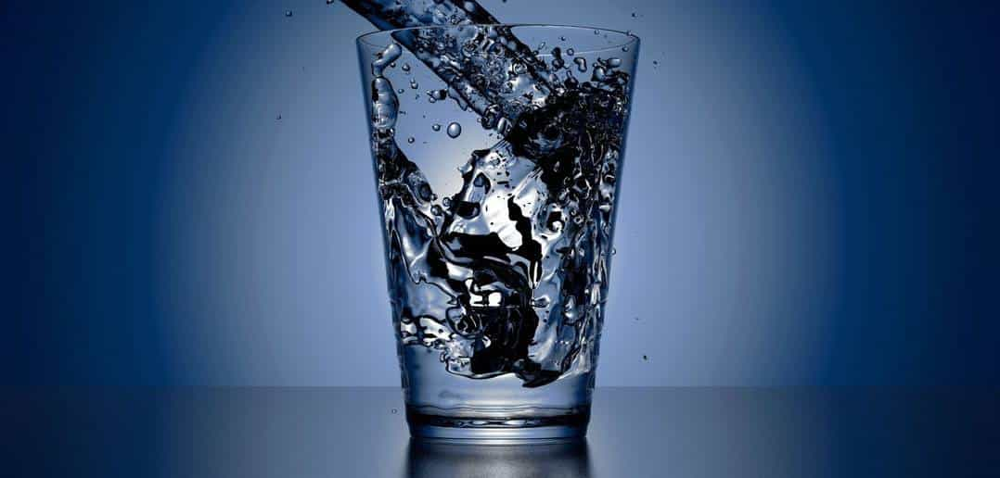

Many men are aware of our declining testosterone levels. Ever since the baby boomers came into play, our T-levels have been dropping more and more each year. Many men have tried to counter this, myself included. We spend hours researching which foods boost testosterone, invest hundreds into testosterone replacement therapy, and even make shady connections with steroid dealers to get that oh-so-coveted T-boost.
What most men don’t focus on, however, is the hidden chemicals that are destroying your testosterone levels. Ever since the big business boom of the 1960’s began, companies have been sneaking unnatural preservatives, chemicals, and other junk into your food, household items, and even clothing. Simply avoiding some of these common mistakes will help you boost your testosterone in no time.
1. Your Tap Water

Every single day, Americans consume thousands of gallons of water—but did you know that there’s a large swathe of chemicals in your tap water that have been linked to lower testosterone levels? Fluoride, although often touted as a solution to rotting teeth, has not only been linked to having a lower IQ, but also to declining testosterone levels. Is it any wonder that the Bilderberg-controlled government puts it in our water supplies like there’s no tomorrow?
The solution to this is to buy a reverse osmosis filter. I personally installed one nearly five years ago, and feel absolutely incredible. When you’re not putting dissolved birth control pills, IQ-sapping fluoride, and probiotic-killing chloride into your body every day, you tend to feel much better.
2. Your Kitchenware

Most men don’t know this, but 99% of the stuff you have in your kitchen probably lowers your testosterone levels. No, I’m not talking about foods that kill testosterone, I’m talking about the stuff that you store the food in. Cans, containers, and water bottles all contain a chemical known as Bisphenol-A, or BPA for short.
In addition to being linked to cancer, diabetes, and heart disease, BPA is also a known culprit for having low testosterone. The endocrine disruptor is in everything and anything that’s plastic nowadays, even a lot of supposedly “BPA-free” kitchenware. The solution to this is using only glass storage devices, with the exception of water bottles and canteens which should be metal.
I personally only use glass containers to store my grass fed beef, wild caught salmon, and other testosterone boosting foods. It makes meal-prepping a breeze, and ensures that you won’t get bogged down by low-T causing BPA’s.
3. Your Shampoo
I wasn’t kidding when I said that there’s chemicals in damn near everything which have been linked to lower testosterone. It’s almost like there’s a war against men or something, wouldn’t you say? Parabens and pthalates, two nasty chemicals linked to being a low-T cuck, are probably in every single one of your cosmetic products. From shampoo to hair spray to moisturizer and even deodorant, you can bet that it’s in them.
Both parabens and pthalates have been linked to a plethora of petrifying, penis-pertaining plights, such as:
- Low testosterone
- Infertility
- Weight gain
- Cancer
- …and more
The solution is to only buy paraben-free and pthalate-free cosmetic products. Buy your shampoo, moisturizer, and whatever other cosmetic stuff you use at Whole Foods, Trader Joe’s, or some other organic-friendly store. Always check the labels and make sure your products are free of parabens and pthalates, and make sure your deodorant is aluminum-free, as well.
4. Your Clothing
That’s right, even certain articles of clothing are known to decrease your testosterone levels—and no, I’m not talking about wearing a dress or bonnet, I’m talking about outerwear. Waterproof fabrics such as Gore-Tex, Perfluorooctanoic Acid, and other Teflon-based plastics have been linked to increased risk of cancer, infertility, and, you guessed it, lower testosterone levels.
So what in the hell is a man to do? You can’t just walk around naked, unless you’re a freelance writer/blogger like Roosh or I. Instead, it’s best if you simply avoid or minimize your exposure to certain types of clothing. Opt for loose-fitting underwear, as constricting undergarments have been shown to decrease testosterone levels. If you have the option, avoid synthetic chemicals and opt for natural fibers such as wool, cotton, and leather.
If you do have to wear a waterproof jacket or coat, try to find one that’s Teflon and PFOA-free. If you absolutely must wear your testosterone-leaching jacket, then at least wear a long sleeve shirt underneath it to minimize skin contact.
Summary
The vast majority of men’s modern ailments, from depression to low energy to being overweight to even being an anti-Trump, limp-wristed cuckold, usually come down to not having enough testosterone. As a baseline, you should start by AVOIDING the things which are already lowering your test. Then, and only then, should you be concerned with “boosting” it, or getting TRT.
If you’d like to bypass all the BS and get sky-high test, 4% bodyfat, and a chiseled six pack, check out Jon’s flagship fitness eBook, Body of an Alpha. On sale for ROK users only!
Read More: 5 Easy Ways to Boost Your Testosterone